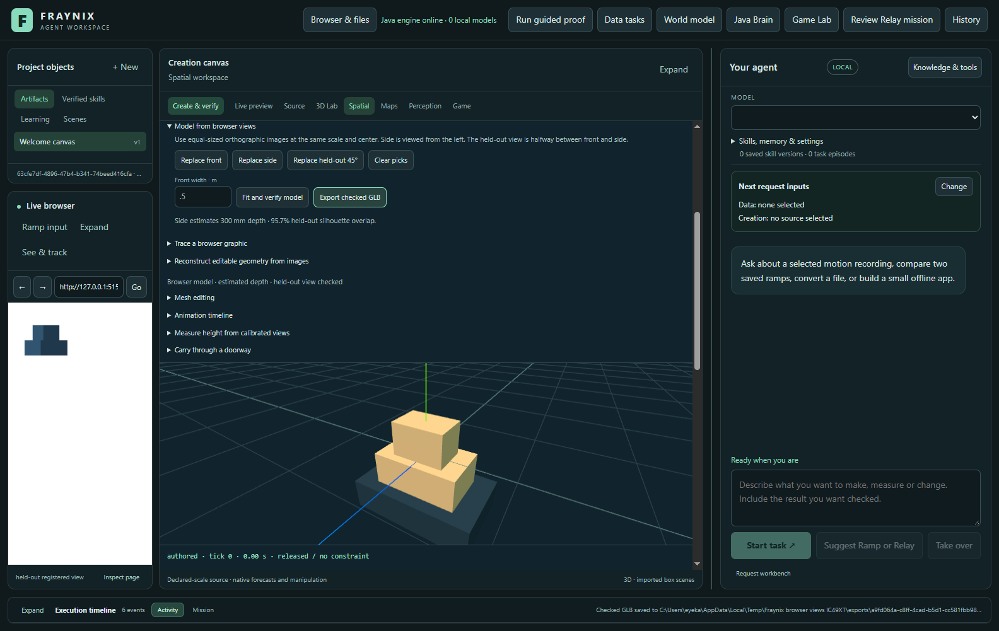
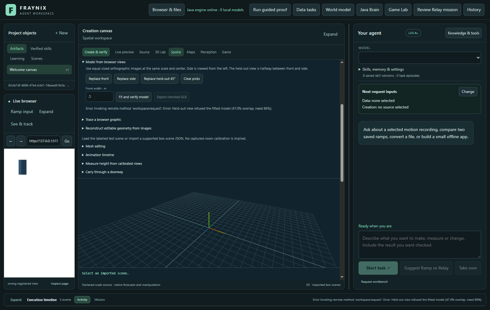

Pick browser views and verify the model
Click visible graphics. Fit front and side, estimate depth, and check the mesh against a separate 45-degree view.
The side view estimates 300 mm depth. The correct held-out view scores 95.7% and a different prop scores 47.0%, below the 86% gate.

Fraynix verifies the model at the held-out view

A different prop is refused
Actual captured front view
Actual captured side view
Actual captured held-out view
System files
Open source